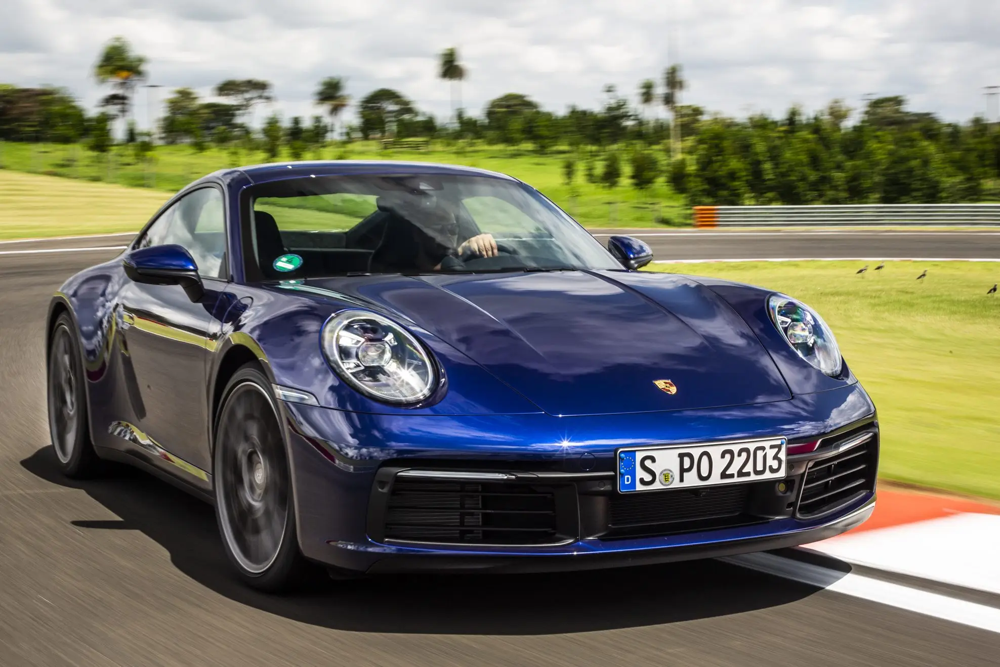

Porsche 911
O Porsche 911 é um carro desportivo produzido pela Porsche desde 1964. O modelo está em constante evolução desde seu lançamento
em 1963 no Salão de Frankfurt, com o nome de 901. Desde o seu lançamento, o 911 tem sido modificado tanto por equipes
particulares quanto pela fábrica em si, seja para rallye, corrida, ou para qualquer outro tipo de competição automotiva. É muitas vezes lembrado como
um dos carros de competição de maior sucesso, especialmente quando se trata de alguma de suas variações, como o poderoso 935.
